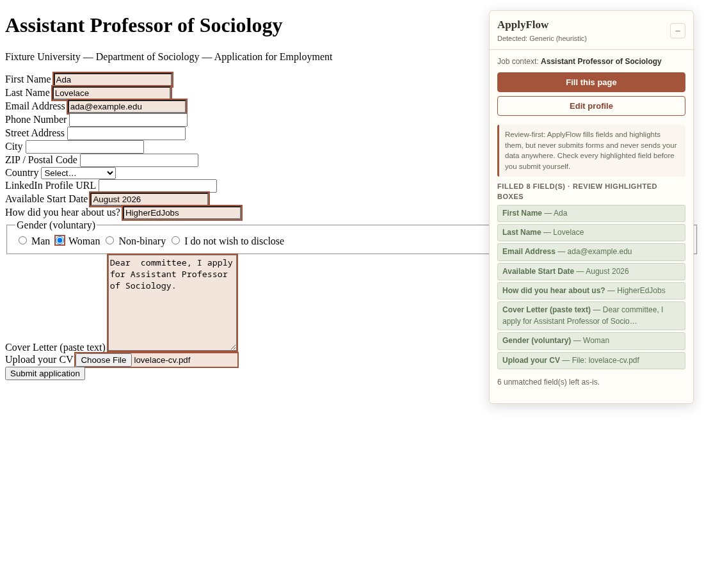
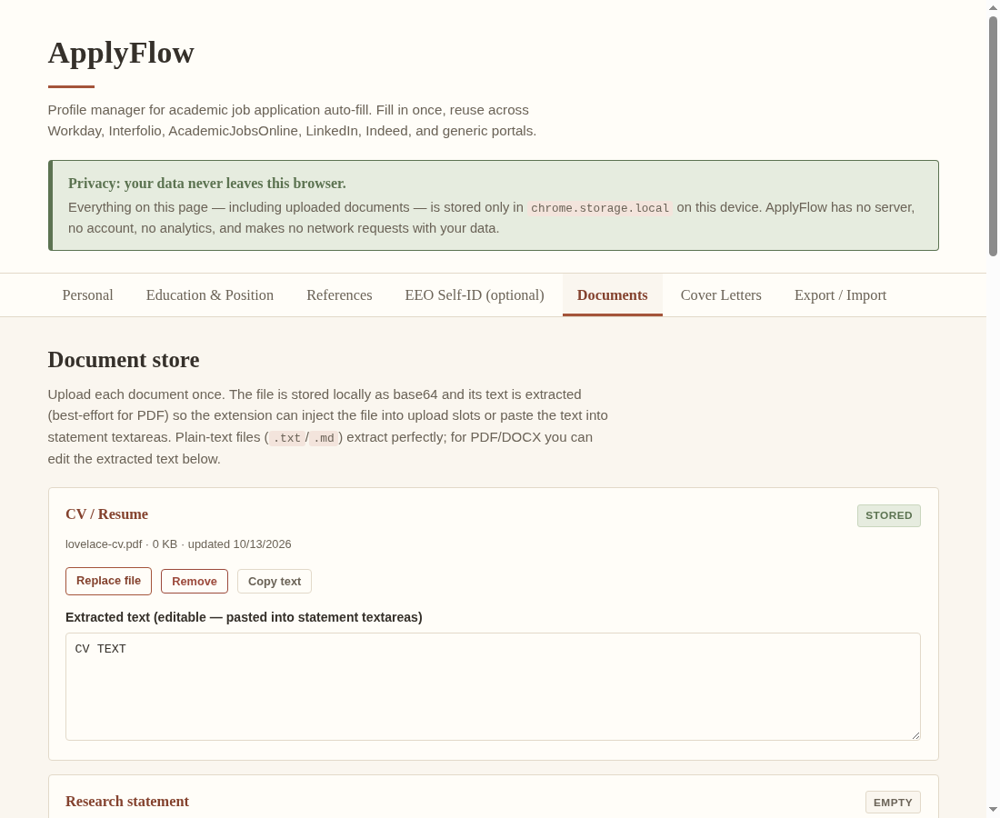
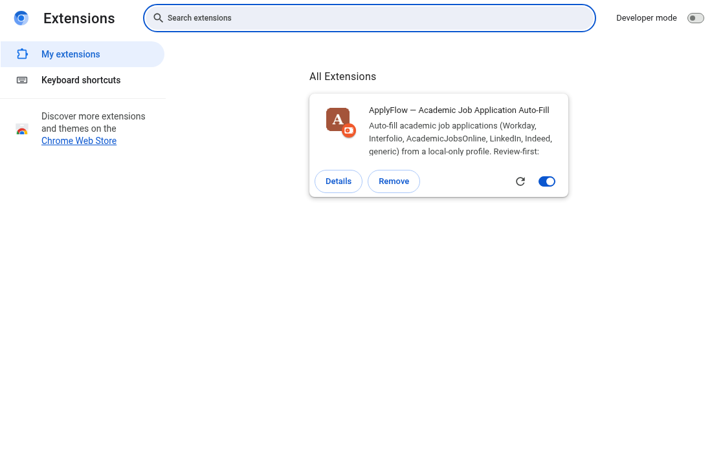

What it does
One reusable profile
Personal info, education history, current position, references, optional EEO self-ID answers, and reusable answers to common free-text questions.
Document store
CV, research / teaching / diversity / personal statements, and transcripts stored locally as base64 with extracted text — injected into file-upload slots or copied as text.
Cover-letter templates
Multiple named templates with {{position}}, {{department}},
{{university}} placeholders, substituted from the detected job context.
Site adapters + heuristics
Specific adapters for Workday, Interfolio, AcademicJobsOnline, LinkedIn, and Indeed, plus
a generic matcher using labels, name, and autocomplete attributes.
Floating panel
“Fill this page” fills fields and highlights each one it touched, with an “attach manually” badge for upload slots that block programmatic files.
Never auto-submits
There is no code path that submits a form. You review every highlighted field and press the portal’s submit button yourself.


Install (load unpacked)
Chrome / Edge / Brave / Arc
- Download or clone the repository, then unzip it somewhere permanent (the folder must stay in place — the browser loads it live).
- Open
chrome://extensions. - Enable Developer mode (toggle, top right).
- Click Load unpacked and select the
applyflowfolder (the one containingmanifest.json). - Pin ApplyFlow to the toolbar if you like, then open any job application page.

Firefox (temporary add-on)
- Open
about:debugging#/runtime/this-firefox. - Click Load Temporary Add-on… and select the
manifest.jsoninside theapplyflowfolder. - Note: temporary add-ons are removed when Firefox restarts. For permanent use, the
extension would need signing via
web-ext/ addons.mozilla.org.
Set up your profile
- Click the ApplyFlow toolbar icon → Edit profile (or right-click the icon → Options).
- Fill in the Personal, Education & Position, and References tabs. Everything auto-saves locally.
- Upload your documents on the Documents tab; check that the extracted text looks right (paste text manually if PDF extraction is imperfect).
- Write one or more cover-letter templates on the Cover Letters tab using
{{position}}/{{department}}/{{university}}. - Export a backup from Export / Import if you want one.
Honest limitations
- Job portals change their markup frequently; site adapters are best-effort and may need selector updates. The generic label matcher is the safety net.
- Some portals block programmatic file uploads; in those cases ApplyFlow shows an “attach manually” badge naming the exact document to upload.
- Multi-step wizards (typical Workday) must be filled page by page — click Fill this page again after each “Next”.
- PDF text extraction is best-effort; you can always edit the stored text by hand in the profile manager.
Source
ApplyFlow is open source (MIT). See the repository’s README.md for development
and verification details.